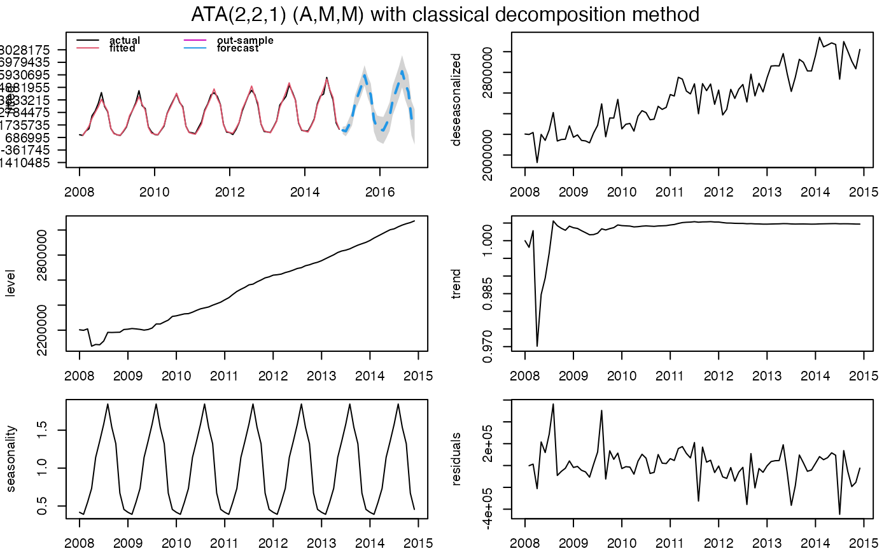

ATA.Forecast is a generic function for forecasting of the ATA Method.
ATA.Forecast(
object,
h = NULL,
out.sample = NULL,
ci.level = 95,
negative.forecast = TRUE,
print.out = TRUE
)An ata object is required for forecast.
Number of periods for forecasting.
A numeric vector or time series of class ts or msts for out-sample.
Confidence Interval levels for forecasting. Default value is 95.
Negative values are allowed for forecasting. Default value is TRUE. If FALSE, all negative values for forecasting are set to 0.
Default is TRUE. If FALSE, forecast summary of ATA Method is not shown.
An object of class ata and forecast values.
#'Yapar G, Yavuz I, Selamlar HT (2017). “Why and How Does Exponential Smoothing Fail? An In Depth Comparison of ATA-Simple and Simple Exponential Smoothing.” Turkish Journal of Forecasting, 1(1), 30--39.
#'Yapar G, Capar S, Selamlar HT, Yavuz I (2018). “Modified Holt's Linear Trend Method.” Hacettepe University Journal of Mathematics and Statistics, 47(5), 1394--1403.
#'Yapar G (2018). “Modified simple exponential smoothing.” Hacettepe University Journal of Mathematics and Statistics, 47(3), 741--754.
#'Yapar G, Selamlar HT, Capar S, Yavuz I (2019). “ATA method.” Hacettepe Journal of Mathematics and Statistics, 48(6), 1838-1844.
trainATA <- head(touristTR, 84)
ata_fit <- ATA(trainATA, parPHI = 1, seasonal.test = TRUE, seasonal.model = "decomp")

#> ATA(2,2,1) (A,M,M)
#>
#> model.type: M
#>
#> seasonal.model: decomp
#>
#> seasonal.type: M
#>
#> forecast horizon: 24
#>
#> accuracy.type: sMAPE
#>
#> Model Fitting Measures:
#>
#> sigma2 loglik MAE
#> 25327678645.19596481 -1188.55670094 106527.45549230
#> MSE RMSE MPE
#> 23496762116.62757874 153286.53599266 0.12753452
#> MAPE sMAPE MASE
#> 4.04068178 4.04508846 0.23313082
#> OWA
#> 0.00000468
#>
#> In-Sample Accuracy Measures:
#>
#> MdAE MdSE RMdSE MdPE
#> 67333.7563803 4533834748.2874908 67333.7563803 0.4018348
#> MdAPE sMdAPE
#> 3.2125716 3.2275752
#>
#> Out-Sample Accuracy Measures:
#>
#> MAE MSE RMSE MPE MAPE sMAPE MASE OWA
#> NA NA NA NA NA NA NA NA
#>
#> Out-Sample Accuracy Measures:
#>
#> MdAE MdSE RMdSE MdPE MdAPE sMdAPE
#> NA NA NA NA NA NA
#>
#> Information Criteria:
#>
#> AIC AICc BIC
#> 2391.113 2392.587 2408.129
#>
#>
#> user system elapsed
#> 0.060 0.007 0.067
#>
#> calculation.time: 0.0673
#>
#>
#> Forecasts:
#> Time Series:
#> Start = 2015.00694444444
#> End = 2016.92361111111
#> Frequency = 12
#> [1] 1288568 1211322 1716223 2292963 3589547 4283724 5018661 5887346 4933780
#> [10] 4253560 2170497 1480814 1363260 1281536 1815704 2425875 3797616 4532031
#> [19] 5309568 6228607 5219767 4500118 2296310 1566650
#>
#>
ata_fc <- ATA.Forecast(ata_fit, h=12)
#> Time Series:
#> Start = 2015.00694444444
#> End = 2015.92361111111
#> Frequency = 12
#> lower forecast upper
#> 2015 969867 1271754 1573641
#> 2015 768220 1195153 1622086
#> 2015 1169918 1692802 2215686
#> 2015 1657210 2260985 2864759
#> 2015 2863372 3538412 4213452
#> 2015 3481949 4221419 4960888
#> 2016 4145447 4944165 5742884
#> 2016 4944330 5798196 6652062
#> 2016 3951934 4857595 5763257
#> 2016 3231957 4186608 5141259
#> 2016 1134438 2135685 3136931
#> 2016 410853 1456621 2502389